Префектура Нагасаки · Гото, остров Фукуэ · гостиница
«Мэгури мэгурасу»: гостиница-монастырь на краю острова Фукуэ
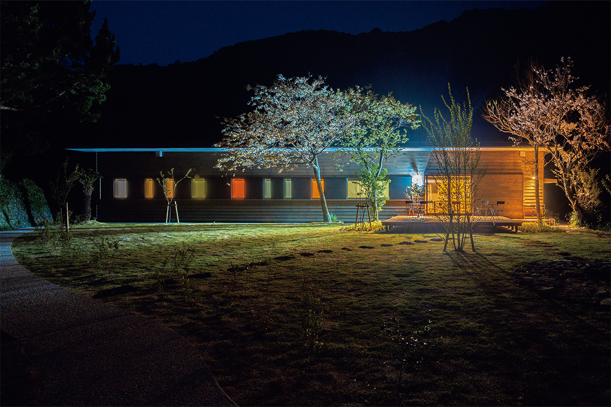
В деревне Хандомари на острове Фукуэ живут всего несколько семей, а в здании закрытой школы устроили гостиницу для тех, кто хочет побыть наедине с собой. Её задумали как место, где у гостя нет других дел, кроме как думать.
Место
Хандомари: деревня у галечного берега
Фукуэ самый большой остров архипелага Гото, и на нём живёт около 34 000 человек. От городских кварталов с аэропортом до деревни Хандомари, спрятанной в тихой бухте, около 40 минут на машине. В 2023 году здесь жили пять семей, всего шесть человек.
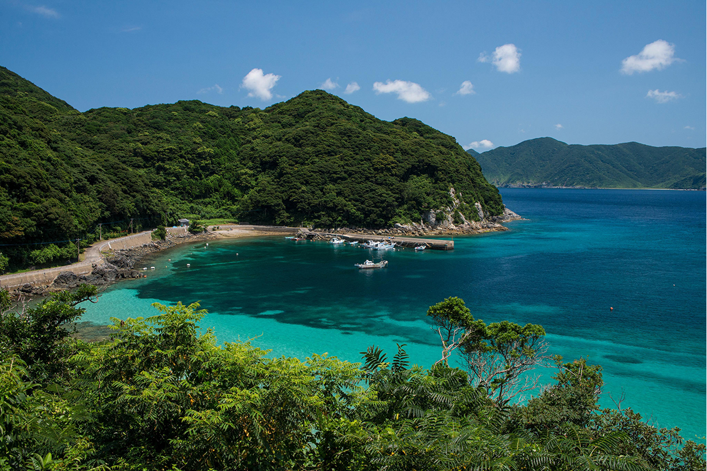
В этой деревне стоит Philosophers in Residence GOTO «Мэгури мэгурасу», гостиница, где всё устроено ради «времени для размышлений». Горы вокруг, море и шорох волн по гальке создают ощущение настоящей глуши. Утром бухта прячется в тумане, днём можно спокойно разобраться в себе, а ночью над головой всё небо в звёздах.
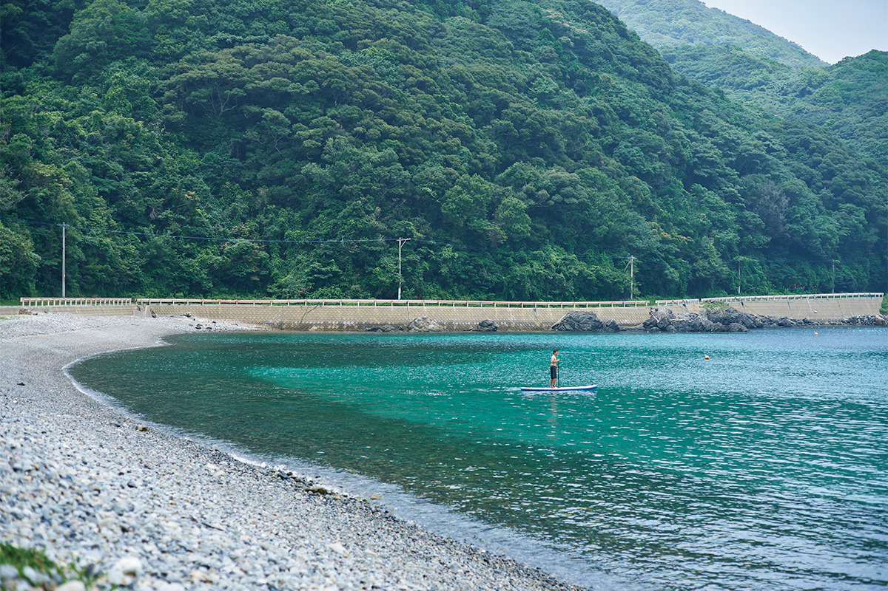
Для тех, кто не хочет сидеть в комнате, есть прогулки на сапборде и костёр в саду.
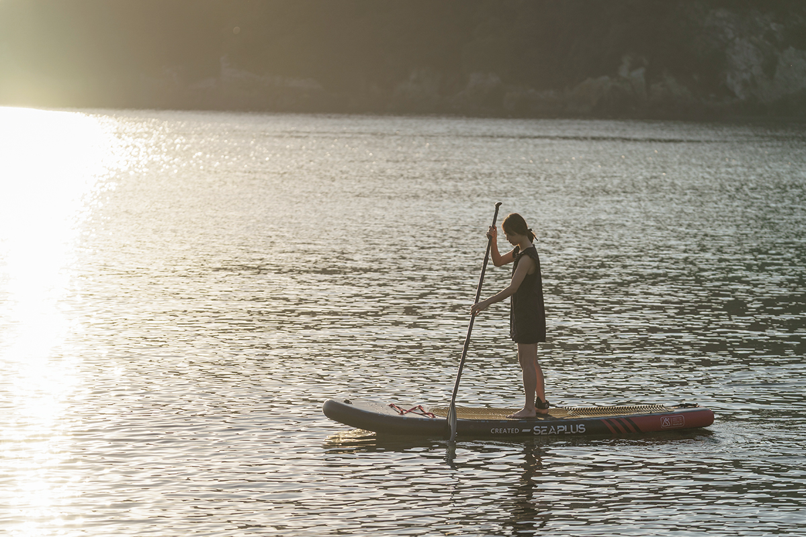
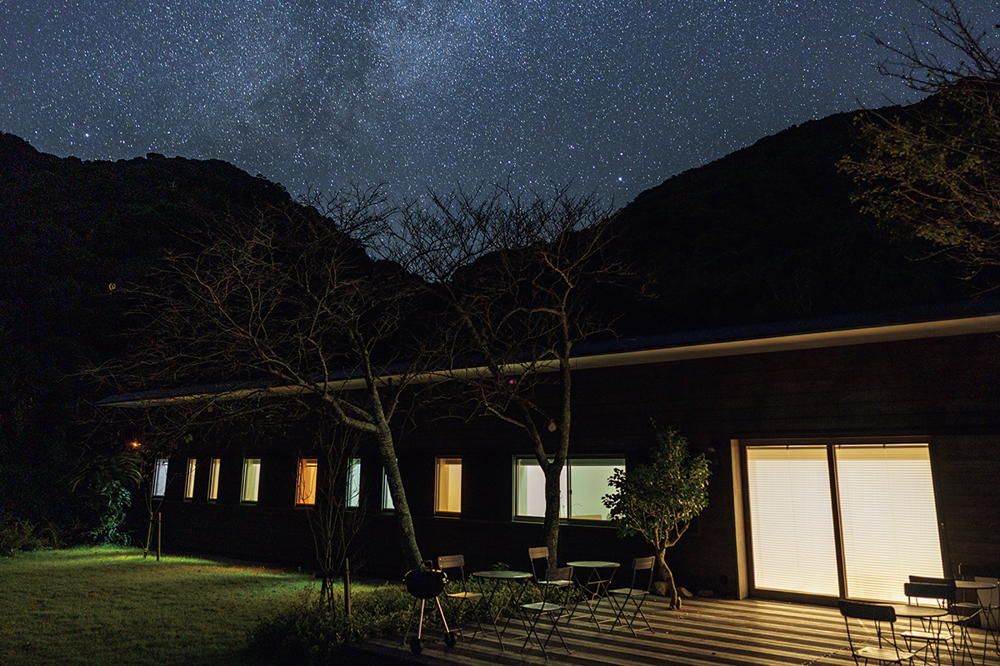
Архитектура
Келья для того, кто думает
Гостиницу проектировал архитектор Ёсифуми Накамура, который всю жизнь размышляет о том, каким должно быть пространство для жизни человека и что делает его красивым. Он перестроил здание закрытого филиала сельской школы. Вдохновением стали история тайных христиан, хранивших веру втайне, и монастыри Франции и Италии. Каждую комнату он задумал как «комнату для человека, который размышляет».
Одноместные номера почти совпадают по размеру с кельями монастыря Ла-Туретт, который спроектировал Ле Корбюзье. В тесной комнате с одним окном ничто не отвлекает, и мысли сами поворачиваются внутрь.
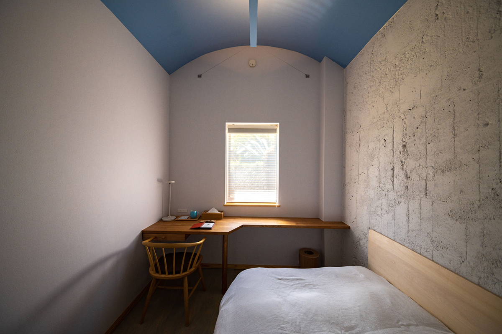
Потолки здесь сводчатые, а цвета взяты из палитры Ле Корбюзье, и у каждой комнаты свой оттенок. Обстановка простая и уютная: стоит открыть дверь и шагнуть внутрь, как настроение меняется само.
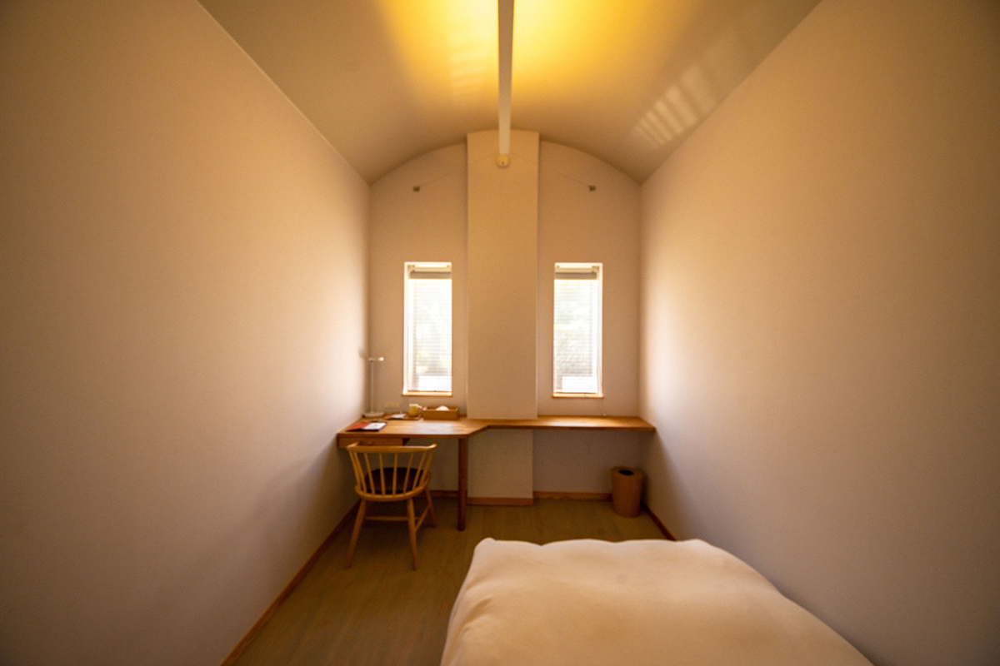
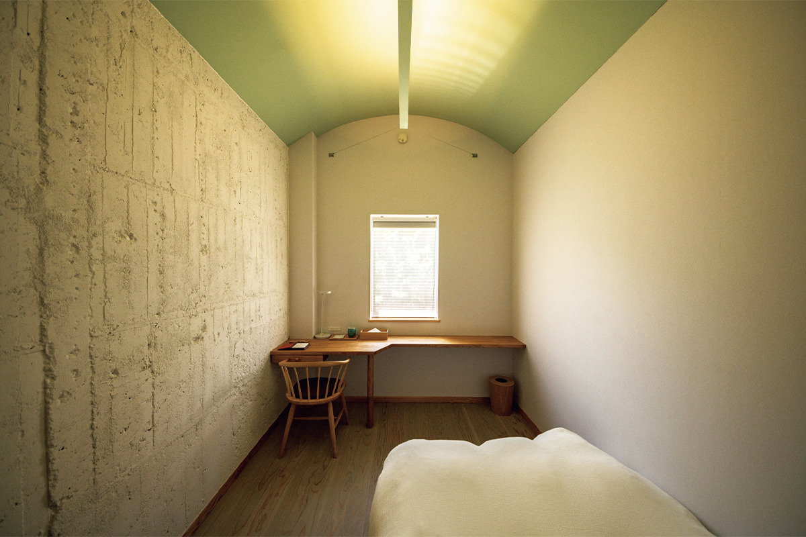
Интернет и прочий поток информации здесь можно на время отключить и провести время так, как хочется именно сейчас. Такая возможность ценится всё выше.
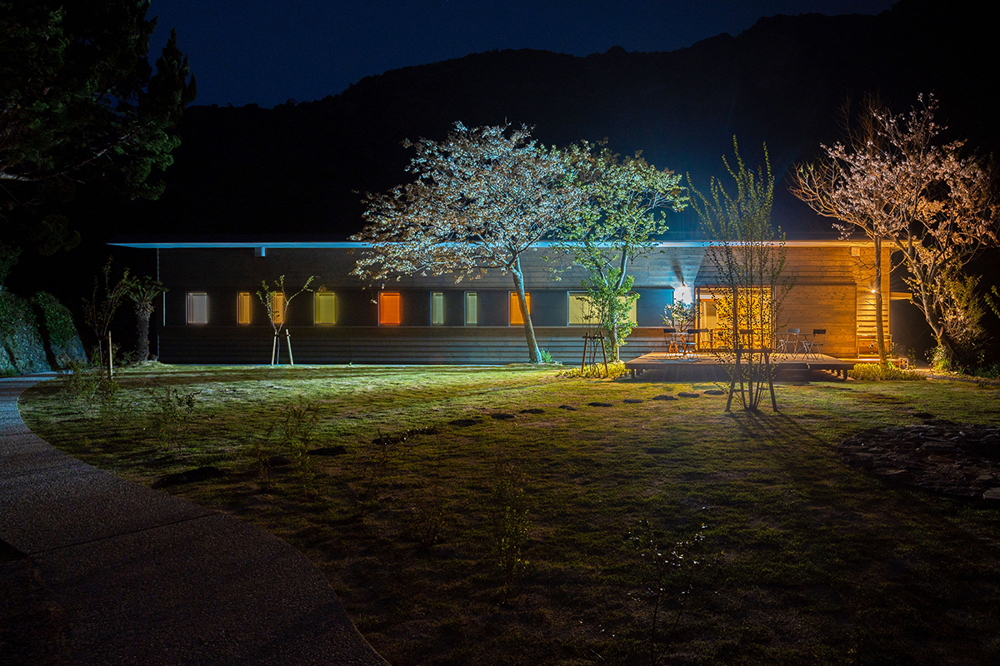
Все номера устроены в бывших классах: шесть одноместных и один двухместный. Гостиница сдаётся целиком, так что сюда можно приехать компанией, но каждый получает собственную келью. Кроме комнат есть терраса и кухня.
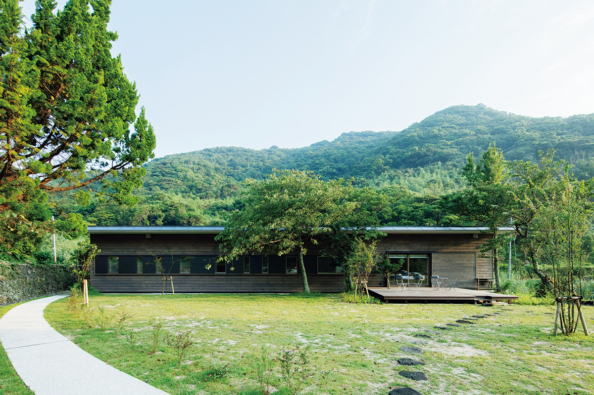
Жизнь
Готовить самим и делиться с соседями
Еду здесь готовят сами из местных продуктов. Общую кухню тоже спроектировал Накамура, и некоторые гости приезжают в первую очередь ради неё. На кухне есть энгава, открытая веранда, обращённая к деревне, поэтому за готовкой легко разговориться с другими гостями или с соседями, которые зашли просто так.
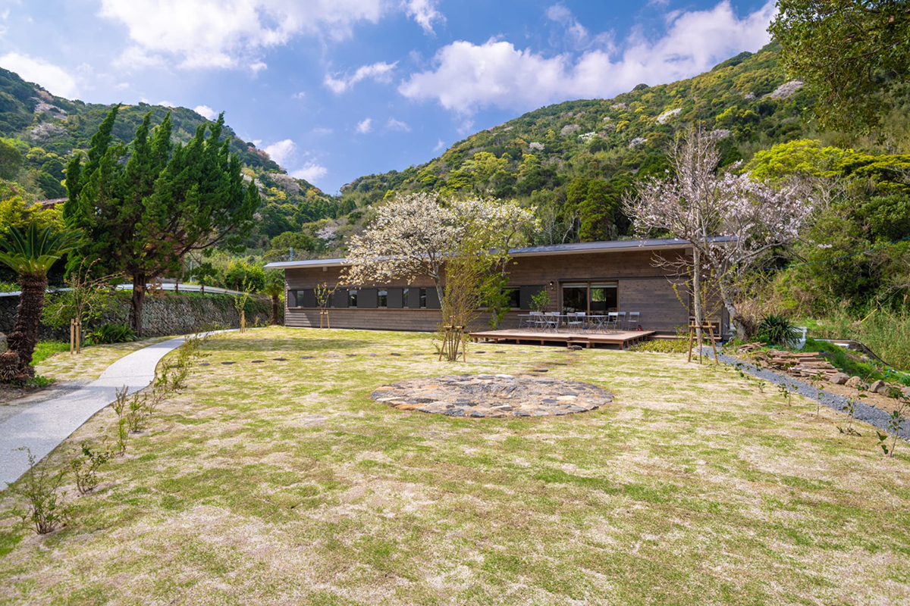
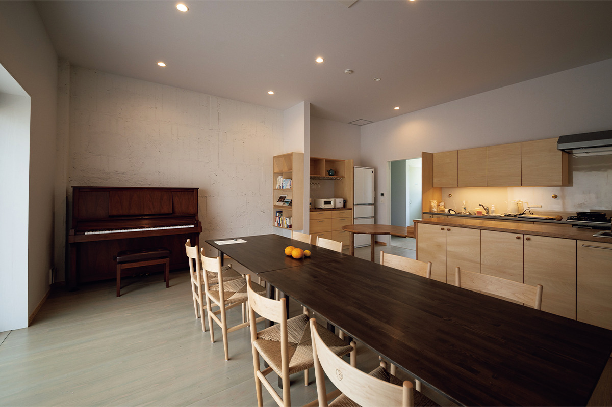
Пожилые жители деревни приносят гостям овощи со своих огородов, а гости, приготовив из них ужин, несут соседям угощение. Так гостиница стала частью жизни деревни, где почти не осталось людей. С самого начала проекта в нём участвует молодой управляющий, которому в 2024 году было 22 года. В том же году «Мэгури мэгурасу» получила специальный приз премии, которую железнодорожная компания JR Kyushu вручает за развитие туризма и местных сообществ на Кюсю.
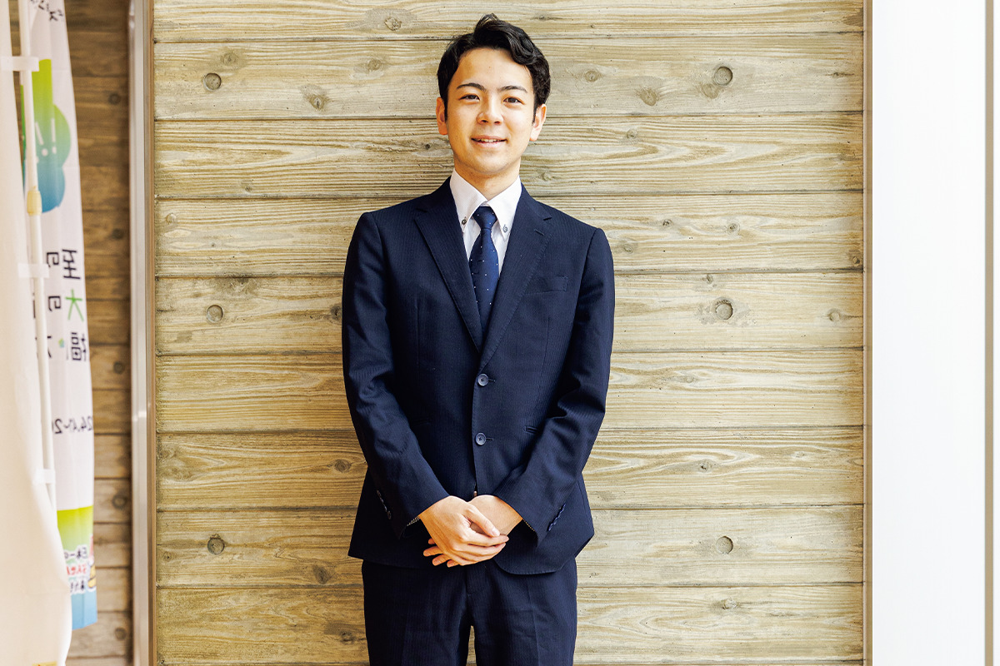
Регистрация проходит не в деревне, а в городе, в отеле SERENDIP HOTEL GOTO. Оттуда до Хандомари добираются на машине, и для гостей есть платная аренда. В 2026 году ночь без питания стоила от 19 500 иен с налогом и сервисным сбором.
Philosophers in Residence GOTO «Мэгури мэгурасу»
- Адрес
- префектура Нагасаки, Гото, Тоги-мати, 1180
- Телефон
- +81 959-73-0220
- Номера
- 7 (6 одноместных, 1 двухместный), дом сдаётся целиком
- Заезд / выезд
- 15:00 / 10:00, регистрация в SERENDIP HOTEL GOTO (Гото, Букэясики, 1-7-12)
- Цены / Вход
- от 19 500 иен за ночь без питания, налог и сервисный сбор включены
- Как добраться
- на машине около 40 минут от аэропорта Гото-Цубаки и около 30 минут от порта Фукуэ, для гостей есть платная аренда машины
Фото: Хиромаса Оцука.